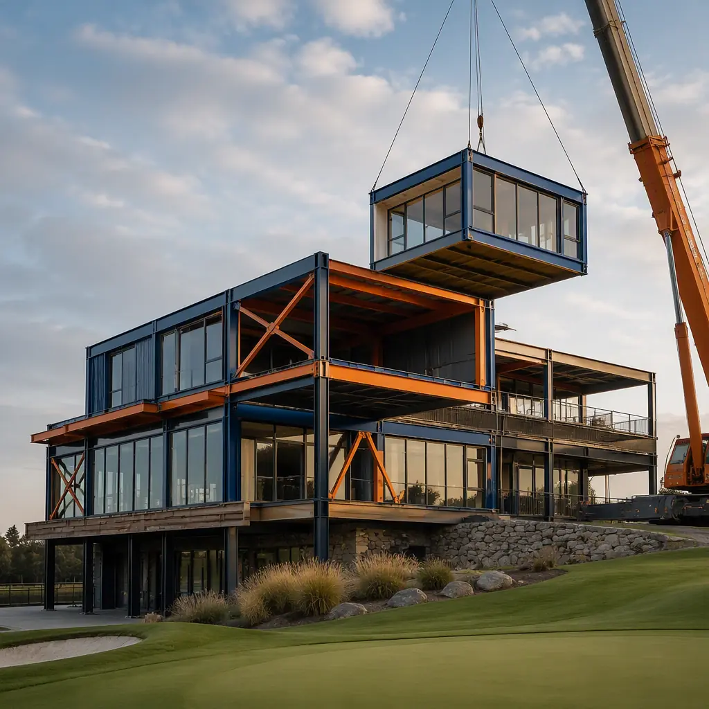
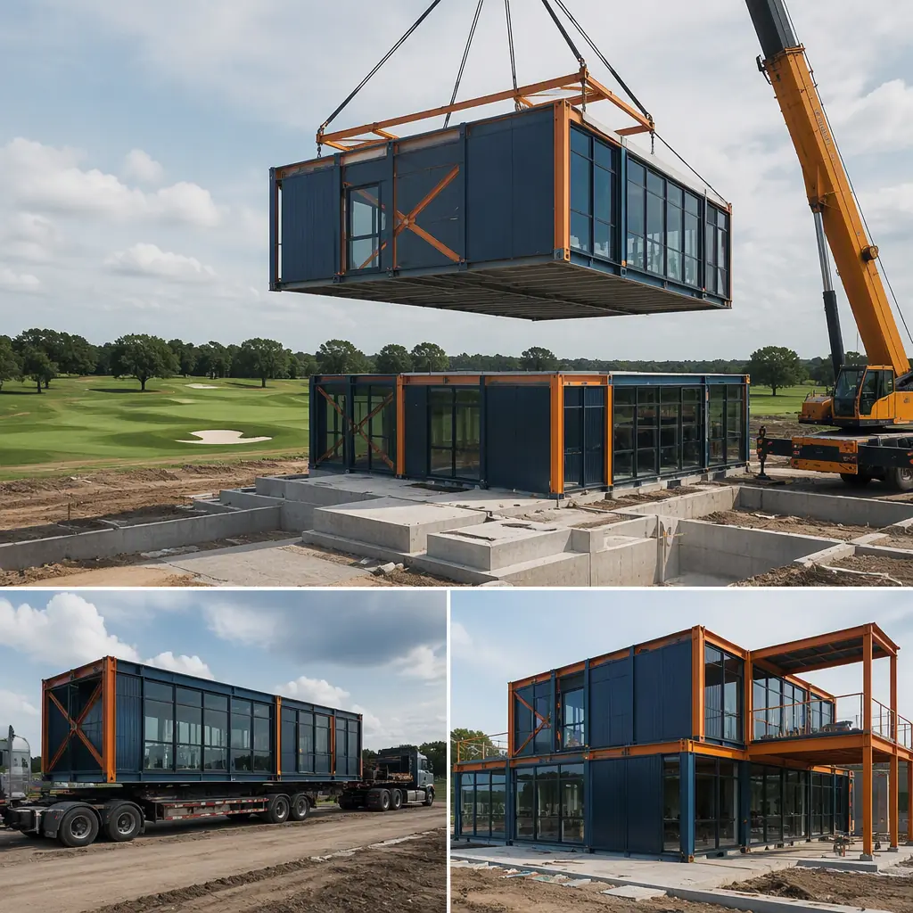
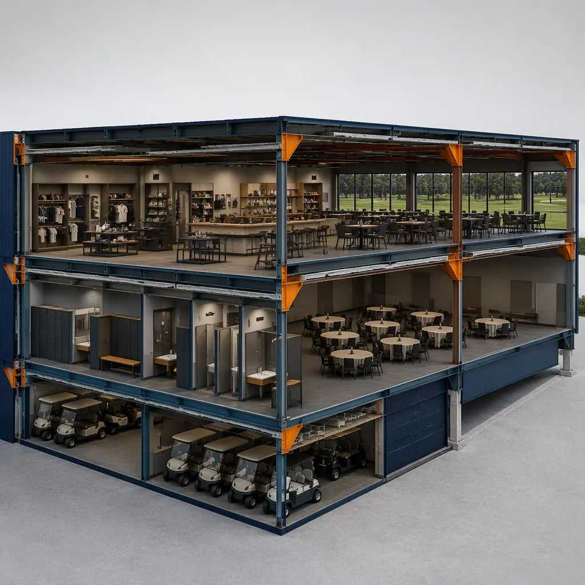
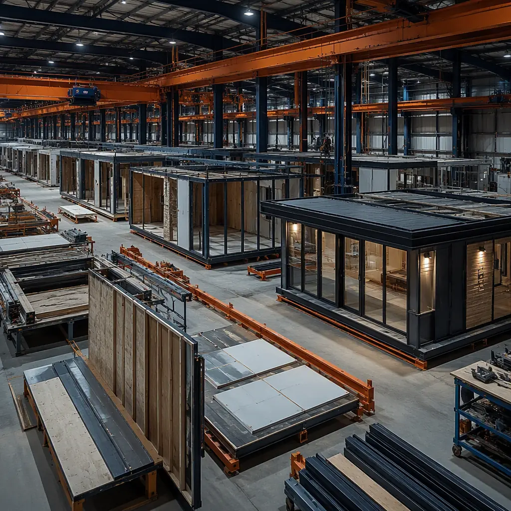

Golf clubhouse construction is one of the most schedule-sensitive building programs in commercial real estate. There are roughly 16,000 golf courses in the United States, and clubhouses — the pro shop, locker rooms, restaurant, event space, and cart storage that anchor each one — are aging. The National Golf Foundation estimates that a meaningful share of clubhouses were built before 2000 and now need replacement or major renovation to meet modern member expectations and food-and-beverage revenue targets. A conventional clubhouse build runs 12–18 months, and for an operating course that means a season or more of disrupted services, temporary facilities, and lost events revenue. Modular prefabricated construction manufactures the clubhouse as factory-built steel-frame modules — pro shop, F&B, locker rooms, and administration produced concurrently off-site while the course keeps operating — compressing delivery to 6–9 months from design to opening. The same concurrent-production model that accelerates modular convention and event centers applies at clubhouse scale.

Why Clubhouse Construction Is Uniquely Schedule-Driven
Clubhouses combine the operational demands of a hospitality venue with the seasonality of golf, which makes schedule the dominant design constraint:
- The golf season cannot pause. A clubhouse closed for 12–18 months of construction costs the club a full season of member dues, green fees, event bookings, and F&B revenue — often $500,000 to $2 million per season for mid-size private clubs. Modular delivery keeps the existing clubhouse operational while modules are manufactured, then executes the site connection in weeks, not months. This operating-facility delivery model parallels modular hospital expansion on active facilities.
- F&B is the highest-revenue member amenity. Modern clubhouses generate 30–50% of total club revenue from food and beverage. The kitchen, bar, dining room, and banquet space must be designed to a hospitality standard and delivered complete — the same factory-installed commercial kitchen approach we document for modular restaurant construction.
- Seasonal construction windows. In northern climates, stick-built clubhouse projects face a 5–6 month weather window. Factory production is weather-independent, so a clubhouse can be designed in winter, manufactured in spring, and set before peak season — a scheduling advantage no conventional method can match.
- Existing structures are often landlocked. Many clubhouses sit on constrained sites between the 1st and 10th tees, with limited staging area. Factory-built modules arrive as complete building sections that need a fraction of the laydown space of stick-built material staging. The constrained-site delivery model follows our guide to modular construction on constrained sites.


What Gets Factory-Built — The Clubhouse Module Package
The modular clubhouse divides into functional modules that can be manufactured, fitted out, and tested independently, then combined on site into a building of 5,000 to 25,000 sq ft:
Pro Shop and Entry Modules
The member-facing front of house — pro shop with retail display walls, reception, and entry lobby — arrives as a finished module with millwork, lighting, and glass storefront pre-installed. A typical pro shop module is 800–1,500 sq ft with 10–12 ft ceilings to accommodate display fixtures and hanging merchandise. The retail fit-out discipline follows modular retail construction.
Locker Room and Amenity Modules
Men's and women's locker rooms with showers, steam or sauna space, and towel service arrive as factory-built wet modules — the same prefabricated wet-room technology used in modular bathroom pods and wet rooms — with plumbing, ventilation, and finishes installed and pressure-tested off-site.
Restaurant, Bar, and Banquet Modules
The F&B program — kitchen, bar, dining room, and divisible banquet space — is the revenue engine of the clubhouse. Kitchen modules arrive with commercial equipment, hood systems, and grease ductwork pre-installed and code-inspected at the factory; dining and banquet modules arrive with acoustic treatments and AV infrastructure. The hospitality build quality follows modular resort and extended-stay construction.
Cart Storage and Maintenance Modules
Beyond the clubhouse itself, courses need cart storage buildings (typically 4,000–10,000 sq ft for 80–150 carts), maintenance facilities, and halfway houses. These are the most standardized modules in the package — clear-span steel structures with charging infrastructure and wash bays — and they deliver the fastest payback because they are pure cost reduction versus stick-built equivalents.

Structural Engineering — Clear Spans and Large Openings
The engineering challenge in clubhouse modules is the open-plan program: banquet rooms need clear spans of 40–60 ft, and the pro shop and dining areas need floor-to-ceiling glazing facing the course. Factory-built steel frames solve both:
- Clear-span module design. Banquet and event modules use integrated steel roof trusses and column-free interiors, eliminating the interior columns that obstruct event layouts in stick-built buildings. The large-span engineering parallels modular event center construction.
- Glass-wall integration. Modules facing the course are engineered with integrated structural mullions and low-E glazing assemblies installed at the factory — eliminating field glazing on a high-bay elevation and improving air-sealing performance. The envelope discipline follows modular building envelope systems.
- Two-story stacking. Larger clubhouses stack locker rooms and mechanical space below with dining and event space above, using steel moment-frame modules rated for multi-story stacking — the same structural system used in modular high-rise construction.
Cost Structure — Modular vs. Conventional Clubhouse
| Cost Category | Conventional (12,000 sq ft Clubhouse) | Modular (12,000 sq ft Clubhouse) |
|---|---|---|
| Structure & envelope | $1.6–2.4M | $1.2–1.8M (factory steel frame) |
| Pro shop & front of house fit-out | $0.7–1.1M | $0.55–0.85M (factory millwork) |
| Locker rooms & wet areas | $0.8–1.3M | $0.6–1.0M (factory wet modules) |
| Kitchen, bar & banquet fit-out | $1.4–2.2M | $1.1–1.7M (pre-installed equipment) |
| Site work & connections | $0.6–1.0M | $0.35–0.6M |
| Total Building Cost | $5.1–8.0M | $3.8–5.95M |
The 20–30% building cost reduction compounds with a full season of preserved club revenue. For a full treatment of modular project economics, see our 2026 modular cost guide and our developer's ROI analysis.
Delivery Models — Replacement, Addition, and Interim
Clubhouse projects follow three distinct delivery models, and modular construction fits each:
- Full replacement on the existing footprint. The most common program: demolish or mothball the old clubhouse, set the new modular building in its place during the off-season, and open for spring. Because modules arrive finished, the site phase — foundations, utility connections, and module setting — fits inside an 8–12 week off-season window.
- Addition and renovation. Clubs adding banquet capacity, a new kitchen, or expanded locker rooms can set new modules against the existing building, with the connection executed over a short shutdown. The addition model is documented in modular building additions and expansions.
- Interim and satellite facilities. Clubs renovating in phases deploy relocatable modules as interim pro shops or halfway houses, then relocate them to a satellite course or practice facility. The relocatable-building experience from modular temporary and relocatable facilities applies directly.
Compliance — Code, Accessibility, and Food Service
Clubhouses operate under IBC occupancy classifications that combine assembly (A-2 for dining and banquet), mercantile (M for pro shop), and business (B) uses, with the most demanding requirements in the food service program: commercial kitchen ventilation per IMC, grease duct ratings, fire suppression, and accessibility per ADA — the full clubhouse must be accessible, including locker rooms and event spaces. Modular delivery supports compliance by building to the same codes in a factory environment with third-party inspections at each production stage, and by delivering the complete documentation package — the compliance approach we outline for permitting and zoning in modular construction. The accessibility program is covered in our ADA compliance guide.
Is Modular Right for Your Clubhouse Project?
Modular golf clubhouse delivery delivers the strongest value when a full season of revenue is at stake, when the site is constrained between active holes, when the program includes wet areas and a commercial kitchen (the modules where factory quality is highest), and when the club needs interim capacity during renovation. For flagship destination clubhouses with complex architectural programs, a hybrid approach — modular structural and wet modules with conventional finish work — delivers most of the schedule and quality benefits while preserving design freedom. For clubs planning a new or replacement clubhouse, modular delivery converts the project from a year-plus disruption into an off-season program — consistent with the modular sports stadiums & arenas programs we document elsewhere.